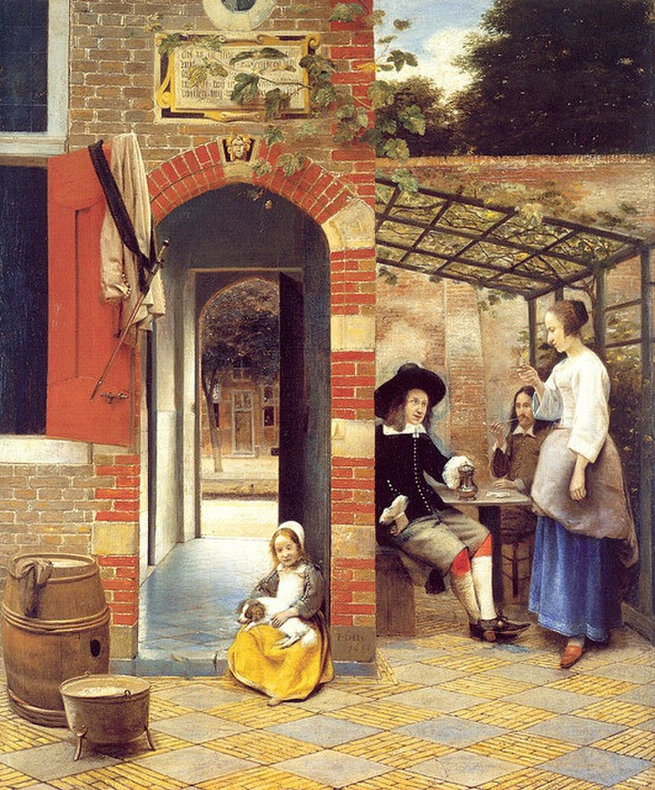

<head>
<meta charset="UTF-8" />
<meta name="keywords" content="drawing, painting" />
<meta name="description" content="drawings by Sunjy" />
<title>Sunjy</title>
<link rel="shortcut icon" type="image/x-icon" href="../../mImages/mCommon/favicon.ico" media="screen" />
<link rel="stylesheet" type="text/css" href="../../mCsses/mCommon/mCssA.css" />
<link rel="stylesheet" type="text/css" href="../../mCsses/mCommon/mCssB.css" />
<link rel="stylesheet" type="text/css" href="../../mCsses/mCommon/mCssC.css" />
<link rel="stylesheet" type="text/css" href="../../mCsses/mCommon/mCssD.css" />
<link rel="stylesheet" type="text/css" href="../../mCsses/mContent/mCssA.css" />
<link rel="stylesheet" type="text/css" href="../../mCsses/mContent/mCssB.css" />
<link rel="stylesheet" type="text/css" href="../../mCsses/mContent/mCssC.css" />
<link rel="stylesheet" type="text/css" href="../../mCsses/mContent/mCssD.css" />
</head>
<script type="text/javascript" src="../../mScripts/mContent/mContentAA.js" /></script>
<script type="text/javascript" src="../../mScripts/mContent/mContentAB.js" /></script>
<script type="text/javascript" src="../../mScripts/mContent/mContentAC.js" /></script>
<script type="text/javascript" src="../../mScripts/mContent/mContentAD.js" /></script>
<script type="text/javascript"></script> 
<script type="text/javascript">
document.write('<div class="mImgAbsolute"></div>');
/*
document.write('<p class="mFontSizeBColor" />From a white paper...</p>');
document.write('<table class="center"><tr><td>');
document.write('');
document.write('</td></tr></table>');
*/
</script>


<script type="text/javascript">
document.write('<p class="mFontSizeBColor" />Drinkers in the Bower</p>');
document.write('<p class="mFontSizeSColor" />Drinkers in the Bower by Pieter de Hooch depicts a view of the back courtyard of a house. The view looks towards a building, which has an arched passage.<br><br>Through the passageway is a view of the street in front of the house. In the foreground at the step of the passage, is seated a child with a dog in her lap.<br><br>On the right half of the composition under a covering of vine trellis, are two men seated at a table. A woman is standing near them with a glass of wine in her hand.<br><br>This painting is signed and dated with an inscription “P.D.H. 1658” on the archway stone next to the young girl.<br><br>The archway is identical to the one in De Hooch’s painting titled, The Courtyard of a House in Delft, but the right half of the courtyard is very different.<br><br>Were these two paintings depicting a passageway that had special significance for De Hooch? And was it his home’s courtyard and his daughter?<br></p>');
document.write('<table class="center" /><tr><td>');
document.write('<br>Through the passageway is a view of the street in front of the house. In the foreground at the step of the passage, is seated a child with a dog in her lap.<br><br>On the right half of the composition under a covering of vine trellis, are two men seated at a table. A woman is standing near them with a glass of wine in her hand.<br><br>This painting is signed and dated with an inscription “P.D.H. 1658” on the archway stone next to the young girl.<br><br>The archway is identical to the one in De Hooch’s painting titled, The Courtyard of a House in Delft, but the right half of the courtyard is very different.<br><br>Were these two paintings depicting a passageway that had special significance for De Hooch? And was it his home’s courtyard and his daughter?<br>" />');
document.write('</td></tr></table>');
</script>


